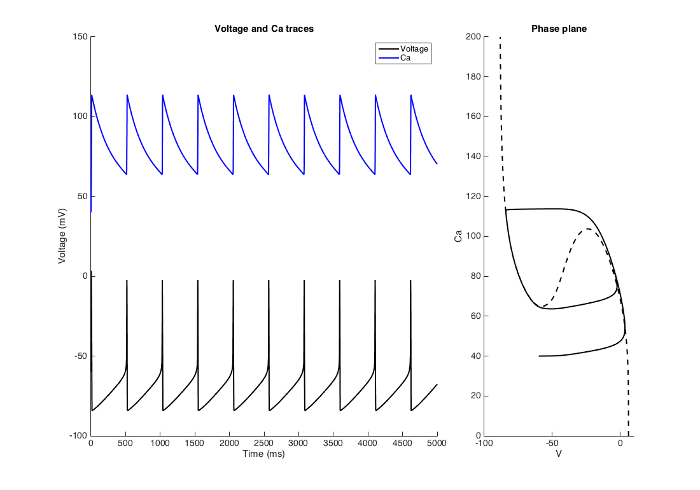
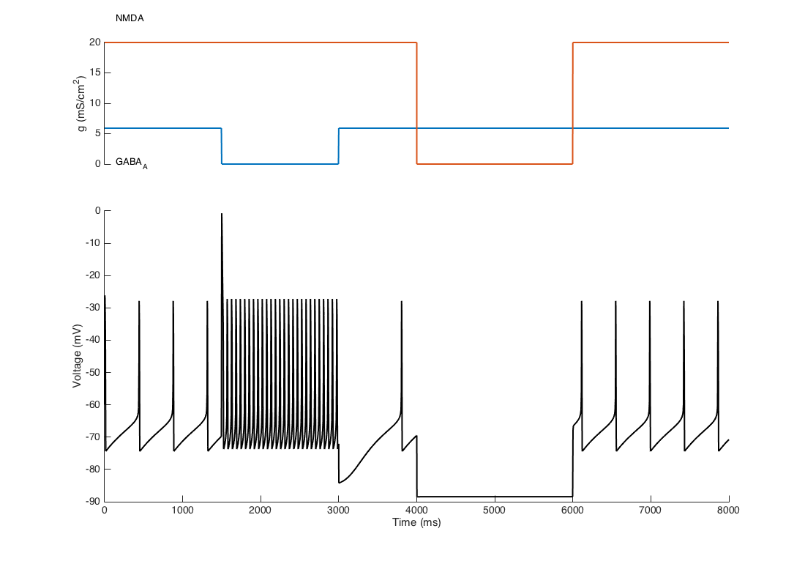
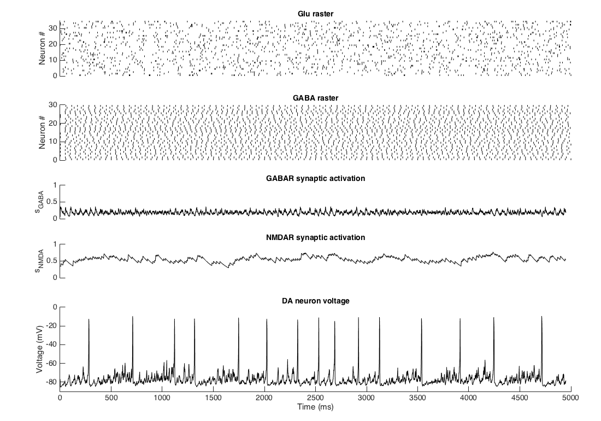

This is the readme for a model of the dopaminergic (DA) and GABAergic neurons from Morozova et al, 2016 PLOS Computational Biology and Morozova EO, Myroshnychenko M, Zakharov D, di Volo M, Gutkin B, Lapish CC, Kuznetsov A (2016) Contribution of synchronized GABAergic neurons to dopaminergic neuron firing and bursting. J Neurophysiol. 116(4):1900-1923 These model files were contributed by Ekaterina O Morozova. The model is presented in 2 formats: 1) In MATLAB format (mainDAneuron.m) with associated built MEX files and source C codes (DAneuronDB.cpp and DAneuuonGABApopulationDB.cpp). 2) In XPPAUT format (DAandGABAneurons.ode). 1) mainDAneuron.m is the main program, which produces voltage and Ca traces of the DA neuron under different conditions, phase planes   and reproduces part of figure 2 from the paper:  This code contains complied MEX files for 64-bit system and the source C codes that could be compiled on your platform. We recommended to compile MEX files on your platform. This can be done by uncommenting the "mex DAneuronDB.cpp" line (line 3) in the mainDAneuron.m for the first part of the code and "mex DAneuronGABApopulationDB.cpp" line (line 59) for the second part of the code (requires MEX compiler installed within MATLAB). DAneuronDB.cpp is a C code for calculating DA neuron voltage and Ca oscillations. DAneuronGABApopulationDB.cpp is a C code for calculating DA and GABA neurons voltages,as well as Ca, GABA and Glu synaptic variables. These files could be modified, for example to get more outputs of the model, such as currents or gating variables. Glu_raster.m is a functions that simulates Glu inputs as Poisson processes. 2) DAandGABAneurons.ode is XPPAUT code for calculating DA and GABA neurons voltages, etc and producing bifurcation diagrams.